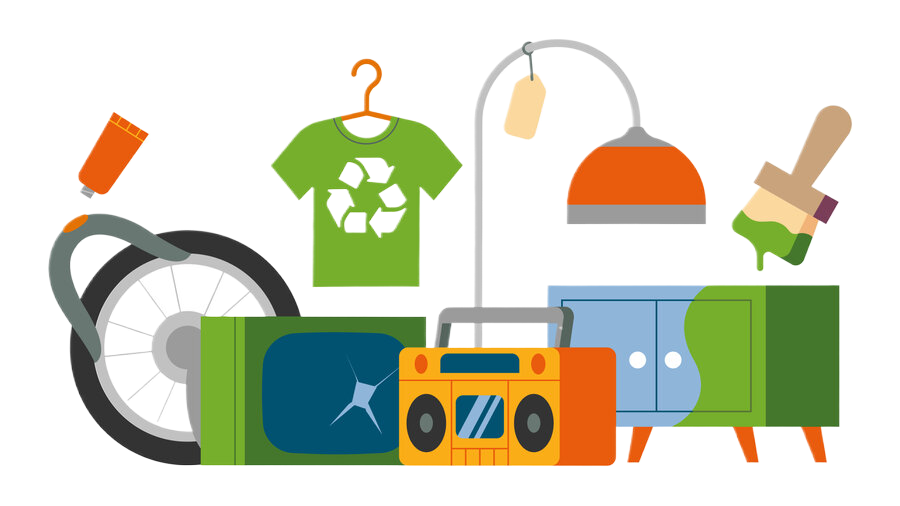
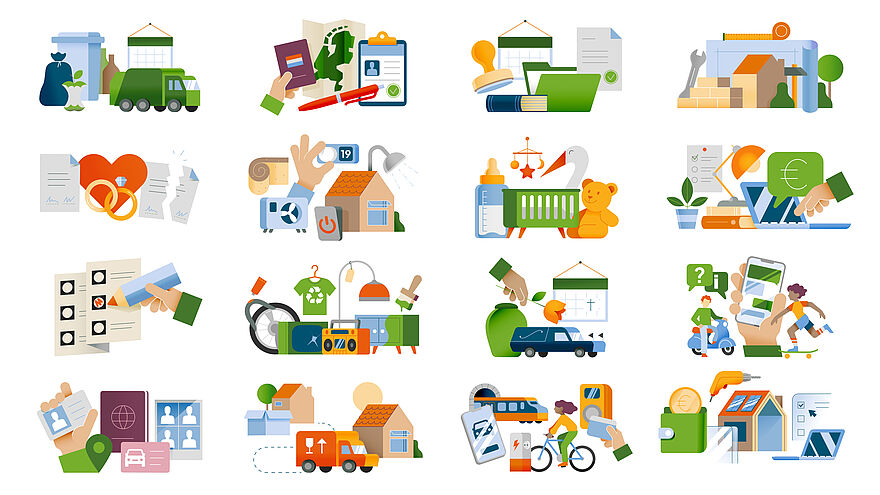

Open source iconenset
Gebruik duidelijke iconen om informatie herkenbaar te maken.
Maak ingewikkelde informatie eenvoudig.
Gebruik de iconen en maak het makkelijke.

Gebruik duidelijke iconen om informatie herkenbaar te maken.

bekijke de Rechtenvrije illustraties
Vind de iconen in de repository en gebruik de bestanden in je eigen website.
Bekijk GitHubVoeg iconen toe aan je project met de webcomponenten van Frameless.
Bekijk documentatieHaal de hele iconenset als ZIP binnen en kies de SVG-bestanden die je nodig hebt.
Download de iconen